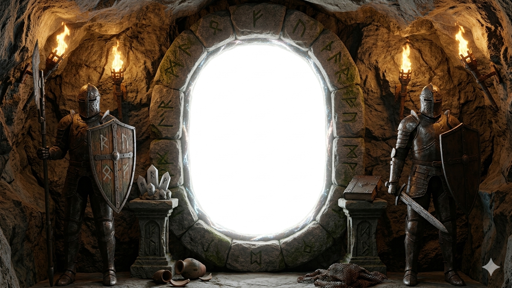

What unfolds here is not a scene, but a duration. A sustained moment
where scale dissolves, edges soften, and perception lingers longer
than expected. The frame holds steady while the world behind it
shifts.

An aperture
into stillness
A constructed moment, suspended between form and vastness. Light,
surface, and scale are carefully arranged to suggest movement
without urgency, presence without intrusion.